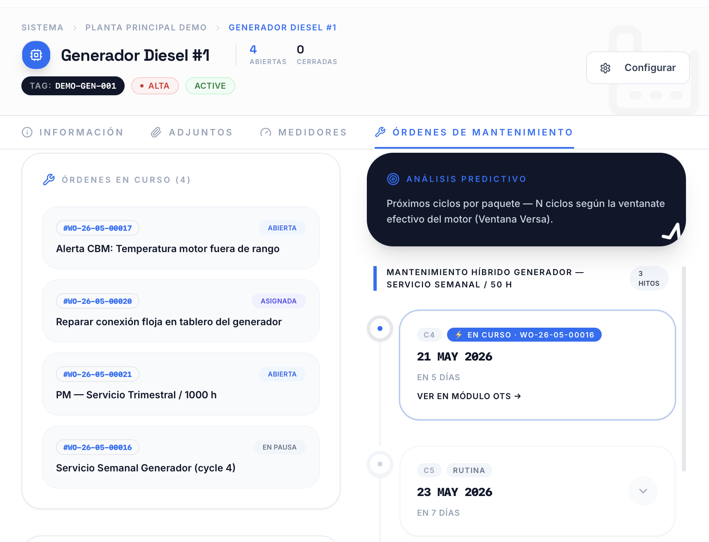
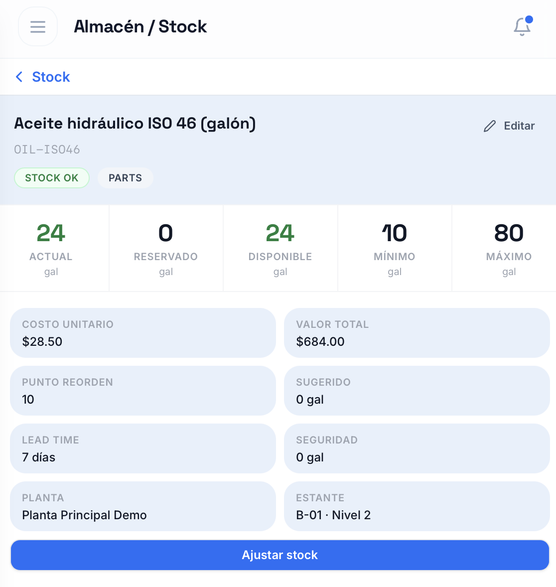
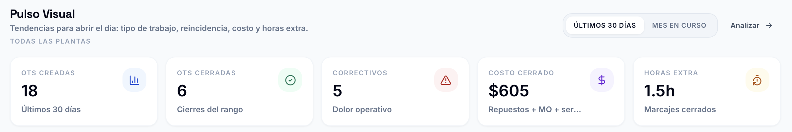
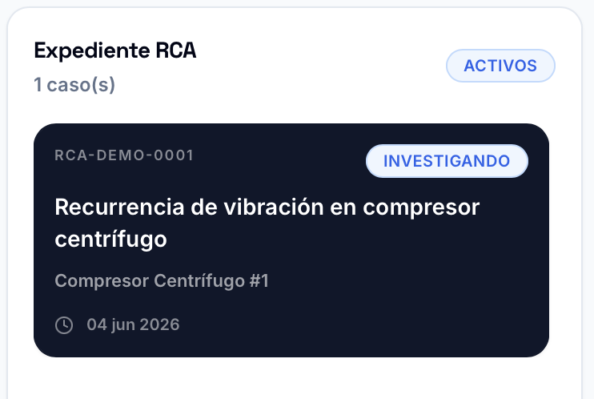

Si tus OTs, preventivos y repuestos viven entre Excel, WhatsApp y memoria del equipo, estás administrando a ciegas.
VersaMaint centraliza el trabajo diario sin convertir la implementación en un proyecto corporativo pesado.
 Diagnóstico
Diagnóstico
Sinergia Operativa: VersaMaint × APEX
VersaMaint es el software intuitivo que organiza activos, órdenes, preventivos e inventario. Y cuando tu equipo técnico está demasiado ocupado apagando fuegos para implementar una nueva herramienta, la división de ingeniería APEX entra en acción. Son dos fuerzas independientes con una sinergia perfecta: tecnología clara respaldada por experiencia en campo.

Decisión rápida
VersaMaint reúne el trabajo diario de mantenimiento en una plataforma clara: activos, OTs, planificación, inventario, métricas y RCA. Empiezas con software; sumas acompañamiento solo cuando lo necesitas.
VersaMaint centraliza el trabajo diario sin convertir la implementación en un proyecto corporativo pesado.
Activos, OTs, solicitudes, PM, planificador, inventario, inspecciones, adjuntos, roles, analítica y RCA.
Starter incluye 6 usuarios pagos, 3 solicitantes gratuitos y 25 GB para empezar sin sobredimensionar.
Una colaboración estrecha. Versa pone el software; APEX aporta la ingeniería e implementación si tu equipo no tiene tiempo.
Conocemos tu operación, tus activos críticos, cómo reportan fallas y dónde se pierde el control hoy.
Te mostramos VersaMaint y puedes empezar con Starter: 6 usuarios pagos, 3 solicitantes gratuitos y 25 GB por $129/mes.
Si necesitas acelerar porque tu jefe de mantenimiento está muy ocupado, APEX puede apoyar. Si no, VersaMaint es intuitivo para avanzar solo.
Fortalecemos tus planes, auditamos tu gestión y te damos pasos concretos para mejorar y reducir costos. Servicio aparte.
Si tu personal no alcanza, ejecutamos mantenimiento eléctrico, termografía, auditorías y planos. Somos ingenieros de mantenimiento.
VersaMaint cubre el ciclo principal de mantenimiento: activos, órdenes de trabajo, planes preventivos, solicitudes, inventario, adjuntos, roles, analítica y control operativo. Puedes implementarlo solo, pero nuestra mayor fortaleza es la estrecha colaboración con APEX. Operando de forma separada pero en perfecta sinergia, APEX entra cuando tu equipo no tiene tiempo para convertir la intención en proceso.
La trampa del software Enterprise
La mayoría de los CMMS corporativos te cobran miles de dólares por módulos complejos, mientras tu equipo sigue reportando fallas por WhatsApp y perdiendo preventivos en Excel. VersaMaint cambia las reglas del juego.
El costo efectivo baja conforme creces: Starter $21.50, Business $17.35 y Scale $13.03 por usuario pago incluido.
Integraciones IoT nativas, módulos financieros completos y herramientas predictivas suenan increíbles en una presentación de ventas. En la práctica, muchas operaciones terminan pagando por complejidad.
Diseñado en la trinchera
VersaMaint fue concebido por ingenieros salvadoreños con experiencia real en el piso de mantenimiento de pequeñas, medianas y grandes empresas.
Conocemos los paros de máquina de madrugada, el caos de buscar repuestos que nadie registró y la presión de mantener la operación andando con recursos limitados. Hablamos tu mismo idioma porque hemos estado ahí.
El mejor sistema de mantenimiento no es el que tiene más botones, sino el que tu equipo realmente utiliza. Por eso VersaMaint se enfoca en lo que saca a la operación del caos.
Interfaz pensada para el técnico frente a la máquina, no solo para la gerencia.
Los requesters no consumen asientos de pago: pueden reportar fallas sin inflar tu factura mensual.
Starter es una entrada seria para ordenar una planta pequeña; Business y Scale bajan el costo efectivo al crecer.
Tecnología moderna y eficiente para ofrecer accesibilidad real a la industria latinoamericana.
Características del software
Una mirada directa a los flujos que sostienen el mantenimiento diario: activos, OTs, agenda, recursos, inventario, métricas y análisis RCA.

El equipo puede ver las órdenes por etapa, prioridad y responsable. Esto reduce conversaciones dispersas, evita trabajos olvidados y deja claro qué está pendiente, en proceso o listo para cierre.
La vista calendario permite distribuir órdenes por fecha, visualizar carga de trabajo y anticipar choques entre preventivos, correctivos y disponibilidad del equipo.

VersaMaint ayuda a ordenar quién hace qué, cuándo y con qué disponibilidad. La planificación deja de ser una lista suelta y se vuelve una carga visible por técnico, fecha y trabajo.

La jerarquía de activos permite ubicar equipos, agrupar familias, consultar historial y relacionar fallas con el equipo correcto. Menos búsqueda, más trazabilidad.

Los repuestos, servicios externos y costos quedan vinculados a la orden de trabajo. Así cada cierre aporta información útil para presupuesto, compras e historial del activo.

El inventario conecta existencias, consumo y disponibilidad con el trabajo de mantenimiento. Esto mejora la preparación de OTs y reduce compras urgentes por falta de visibilidad.

Las métricas resumen desempeño, carga y comportamiento de la operación para detectar atrasos, defender recursos y priorizar mejoras con evidencia.

Los casos RCA ayudan a convertir fallas repetitivas en acciones concretas. El análisis se relaciona con activos, familias de equipos y componentes para clasificar mejor las causas y evitar reincidencias.

Comparativa comercial anónima
Frente a CMMS corporativos y suites más pesadas, VersaMaint mantiene el costo bajo control y reduce la curva de aprendizaje para que el equipo sí lo use en planta.
Otros te venden el CMMS por pedazos. Nosotros te damos la plataforma completa desde el primer momento.
Cálculo referencial sobre usuarios pagos equivalentes. Los requesters de VersaMaint no figuran como asientos de pago. Las opciones se muestran anonimizadas para comparar costo, complejidad y adopción sin identificar proveedores concretos.
Planes VersaMaint
Todos los planes incluyen el núcleo del CMMS: activos, órdenes de trabajo, preventivos, solicitudes, inventario, adjuntos, roles y analítica operativa. No necesitas una gran implementación para empezar: VersaMaint está pensado para adoptarse de forma natural, y APEX queda como apoyo opcional si el día a día no deja espacio.
En VersaMaint no escondemos capacidades esenciales detrás de capas comerciales innecesarias. Activos, órdenes, preventivos, inventario, solicitudes, costos, evidencias e indicadores forman parte del núcleo operativo desde el inicio. La diferencia entre planes está en escala, usuarios, almacenamiento y acompañamiento, no en limitar lo que tu mantenimiento necesita para funcionar bien.
Starter es una entrada seria para una planta pequeña. Business incluye el equipo operativo completo, Scale triplica esa capacidad y el almacenamiento crece con la operación: 25 GB, 150 GB, 300 GB y Custom a la medida.
Política de horas incluidas
Las horas incluidas en el plan están pensadas para resolver dudas de uso, orientar la configuración inicial, explicar buenas prácticas dentro de VersaMaint y recoger oportunidades de mejora del producto según tu operación. Este acompañamiento ayuda a que el equipo aproveche mejor el CMMS, pero no reemplaza un servicio de consultoría o implementación APEX. Actividades como levantamiento de activos, diseño de planes de mantenimiento, diagnósticos técnicos, capacitación formal por rol, trabajos de ingeniería o rediseño de procesos se cotizan por separado bajo un alcance específico.
Sinergia APEX × VersaMaint
En muchas plantas de Latinoamérica, el responsable de mantenimiento sabe qué debería hacer: ordenar activos, depurar preventivos, medir paros, controlar repuestos y capacitar al equipo. Pero el día a día lo consume. APEX existe para entrar ahí: tomar esa carga estratégica, convertirla en método y dejar una operación que se sostenga.
Potencial de mejora en disponibilidad de activos cuando la función de mantenimiento se digitaliza con proceso.
Rango observado por McKinsey para reducción de costos de mantenimiento en transformaciones digitales.
Siemens advierte que el downtime puede golpear fuerte incluso a fabricantes medianos y pequeños.
La calidad de descripciones en OTs define si el historial sirve para mejorar preventivos o solo archivar problemas.
Estados, prioridades, aprobaciones, responsables, evidencia mínima, cierre técnico y reglas de escalamiento.
Jerarquías mantenibles para que el equipo encuentre el equipo correcto y los reportes tengan sentido.
Rutinas, frecuencias, criticidad, ventanas de ejecución y criterios para ajustar el plan con datos reales.
Sesiones para técnicos, supervisores, planners, almacén y gerencia, con lenguaje operativo y casos reales.
Evaluación de gestión actual, brechas, disciplina de datos, inventario, preventivos y capacidad del equipo.
Acompañamiento para que el sistema no se quede como una base vacía, sino como una forma de trabajar.
Cómo se sostiene
APEX trabaja en ciclos: diagnóstico, diseño, piloto, adopción, medición y ajuste. Cada ciclo deja reglas, responsables, indicadores y una siguiente revisión. La meta no es hacer una implementación intensa y desaparecer, sino construir hábitos que reduzcan urgencias, paros, rechazo de calidad e inventario inmovilizado.
Conoce a nuestro director de ingeniería
Nuestro director de ingeniería lidera APEX desde una convicción simple: mantenimiento no mejora con discursos, mejora con método, datos limpios, disciplina operativa y decisiones técnicas bien defendidas.
Referencias públicas: McKinsey sobre digital work management, McKinsey sobre confiabilidad digital, Siemens True Cost of Downtime 2024 y estudio abierto sobre datos CMMS.
APEX Ingeniería
VersaMaint no nació en una oficina desconectada de la planta. Nació junto a APEX, de ingenieros de mantenimiento con experiencia en campo, de colegas que han tenido que resolver fallas reales, defender presupuestos, ordenar activos y sostener operaciones con recursos limitados.
Por eso APEX también ofrece servicios profesionales de ingeniería: porque entendemos el mantenimiento desde el tablero eléctrico, la ruta de inspección, el repuesto que falta y la decisión que se tiene que tomar antes de que la máquina se detenga. Estos servicios son aparte del CMMS y se cotizan como proyectos independientes.
Siguiente paso
El punto de partida puede ser una demo de VersaMaint y una evaluación inicial. La asesoría, implementación o servicios de ingeniería APEX se presupuestan por alcance.